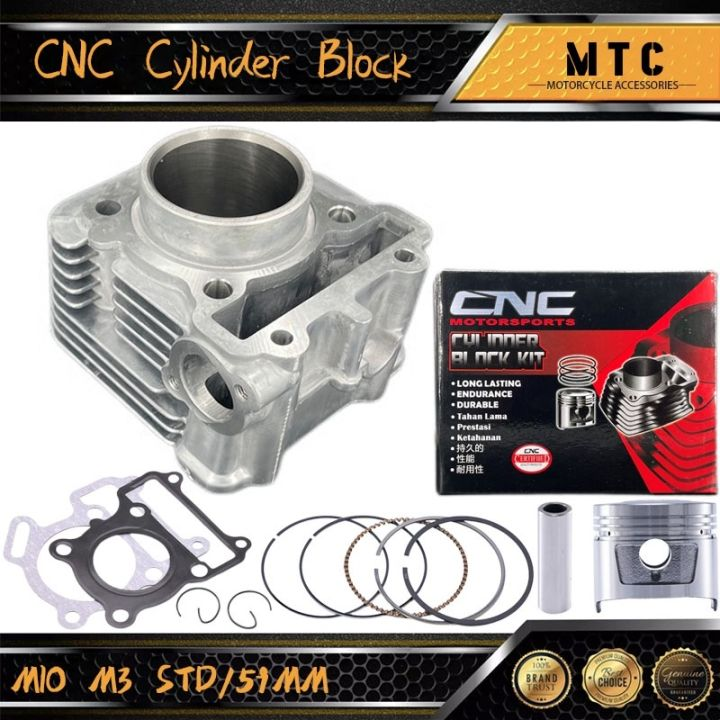
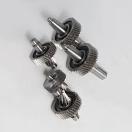
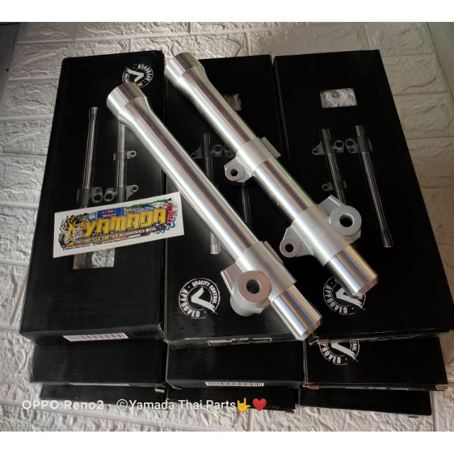
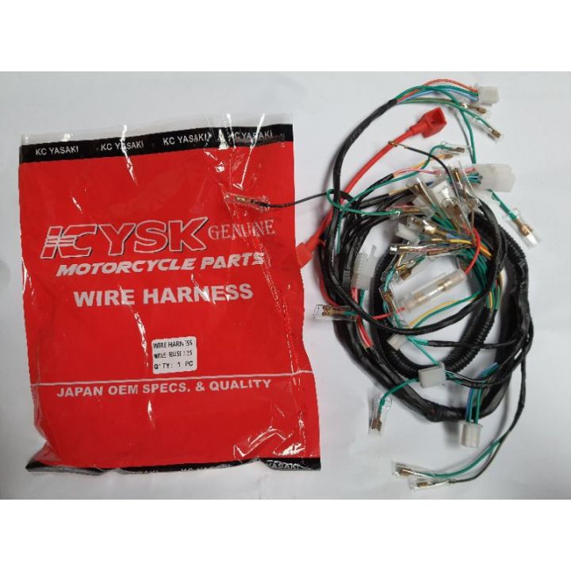
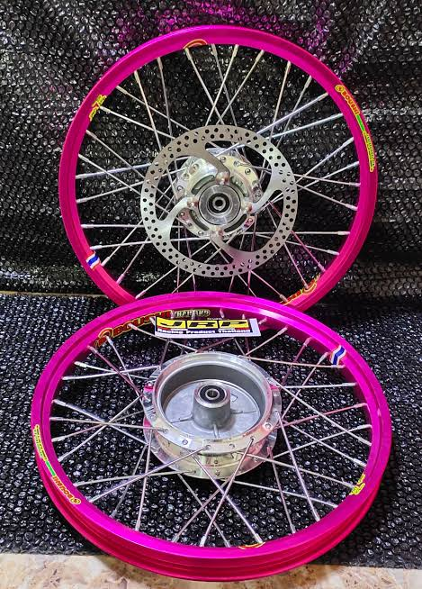
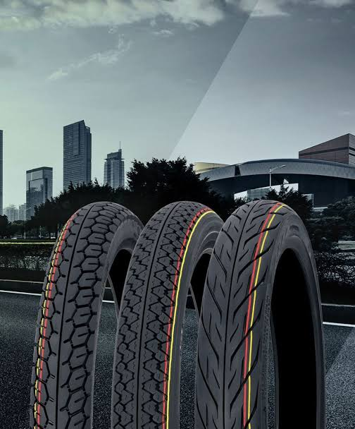

Welcome to Thailand Moto Parts

Computer Numerical Control (CNC) machining is a manufacturing process in which pre-programmed computer software dictates the movement of factory tools and machinery. The process can be used to control a range of complex machinery, from grinders and lathes to mills and CNC routers.
to enable the gear ratio between the drive wheels and engine to adjust as the car slows down and speeds up.
friction created between the rotor and the pads converts the kinetic energy of the motorcycle to heat, which slows the bike. Because motorcycle wheels are fully open to the environment, the rotors and the pads dissipate this heat efficiently. Brake boosters are unnecessary in all but the heaviest models.,

suspension serves a dual purpose: contributing to the vehicle's handling and braking, and providing safety and comfort by keeping the vehicle's passengers comfortably isolated from road noise, bumps and vibrations.
ignite the fuel to generate power by moving the pistons and values. Head Lights, Tail Lights, Other "Running Lights": Electric power is delivered through the wiring harness to the lead and tail lights to provide power to light these devices.
providing traction, resisting wear, absorbing surface irregularities, and allowing the motorcycle to turn via countersteering.
Rim is the frame of a tire that holds the force and stress due to the weight of the vehicle and the impact from various road conditions.
allow you to keep a bike running safely, to bring out untapped performance, and to be prepared for a rough road ahead.